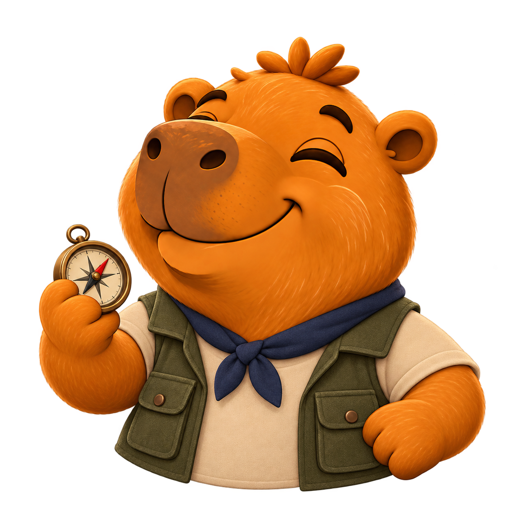
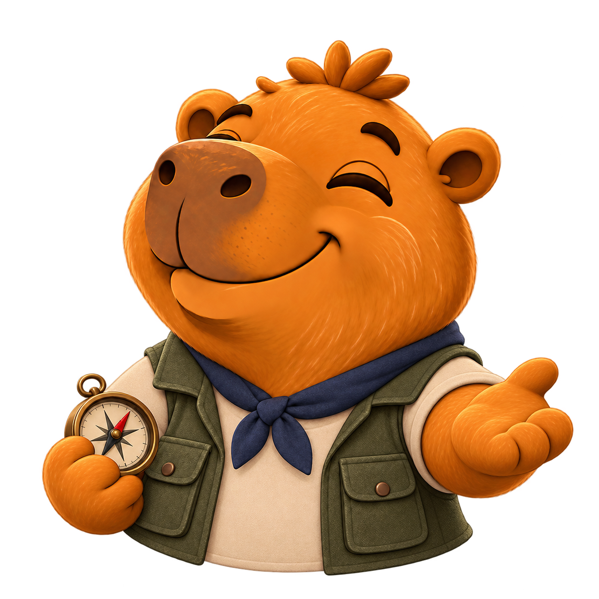

UM NOVO OLHAR PARA A GEOGRAFIA
O Brasil está
nas pistas.
Observe a paisagem.
Encontre seu lugar no mapa.
Tentativas restantes hoje: …360° para explorar2 minutos por rodada

5 regiões. Um país inteiro para descobrir.
SEU PRÓXIMO DESTINO
A exploração
começa por aqui.
Região sorteada
...
O cenário está em algum lugar desta região.
Use as pistas da paisagem para encontrá-lo.
O tempo começa ao entrar na rodada. Cada rodada usa 1 tentativa.

Olhe com atenção.
Cada detalhe pode ser uma pista.
Abrindo a paisagem em 360°…
Explore ao redor. Não carregou ou ficou sem imagem?Trocar local gasta 1 tentativa (rodada vale 0 pontos).
Sorteia outro cenário da mesma região. Atenção: a troca consome 1 tentativa diária e a rodada atual é registrada com 0 pontos.Carregando ruas e pontos de referência…
Não foi possível carregar todos os detalhes do mapa.
Amplie o mapa até as ruas e marque seu palpite.
CADA VIAGEM É UMA DESCOBERTA
O Brasil
surpreende.
Você estava em
0 / 5.000pontos na rodada
—do local correto
0pontos acumulados